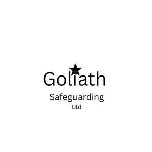

Trade Mark Journal No.2025/036 5 September 2025
UK00004228560 11 July 2025 (5,9,10,35,42,44,45)

- Class 5
- Human growth hormone; Human allograft tissue; Pharmaceutical preparations for human use; Medicines for human purposes; Dietary supplements for human beings; Preparations for detecting mutation in prion genes for medical purposes; Biopharmaceuticals for the treatment of cancer; Human plasma protein; Cell growth media for growing cells for medical use; Biological preparations for the treatment of cancer; Surgical implants grown from stem cells [living tissues]; Reconstituted cells for clinical treatments for skin care; Pharmaceutical products for the treatment of cancer; Pharmaceutical preparations for the prevention of diseases of the metabolic system; Vaccines for human use; Pharmaceutical preparations for the treatment of diseases of the metabolic system; Stem cells for medical purposes; Processed human donor skin for the replacement of soft tissue; Surgical implants grown from stem cells; Biological tissue for implantation; Reconstituted cells for medical treatments for skin care; Tumour antigens; Pharmaceutical preparations for the prevention of diseases of the immune system; Stem cells for veterinary purposes; Human vaccine preparations; Pharmaceutical products for the treatment of bone diseases; Cells for medical use; Pharmaceutical preparations for the prevention of diseases of the endocrine system; Pharmaceutical preparations and substances for the prevention of cancer; Pharmaceutical preparations for the treatment of cancer; Pharmaceutical preparations for the prevention of tumours; Pharmaceutical products for the treatment of viral diseases; Pharmaceutical preparations for the treatment of immune system related diseases and disorders; Pharmaceutical preparations for the treatment of diseases of the endocrine system; Pharmaceutical preparations for the prevention of diseases of the respiratory system; Biological tissue cultures for medical purposes; In vitro gender prediction test kit; Antiarrhythmics; Human coagulation factors; Deodorants, other than for human beings or for animals; Electrocardiograph electrodes (Chemical conductors for -); Electrodes (Chemical conductors for electrocardiograph -); Chemical conductors for electrocardiograph electrodes; Chemical conductors for use with electrocardiograph electrodes; Conductors (Chemical -) for electrocardiograph electrodes; Dietary supplements for human beings and animals; Trace elements (Preparations of -) for human and animal use; Preparations of trace elements for human and animal use; Human immune globulin; Antibiotics for human use; Chemical conductors for use with ekg electrodes; Trace element preparations for human use; Biological tissue cultures for veterinary purposes; Animal sperm; Animal repellents; Veterinary vaccines for bovine animals; Animal repellent formulations; Animal washes; Insecticidal animal shampoos; Attractants for pet animals; Insecticidal animal shampoo; Reagents for use in veterinary genetic testing; Anti-cancer preparations of microbial origin; Pharmaceutical preparations for treating skeletal diseases; Pharmaceutical preparations for the treatment of bone diseases; Pharmaceutical preparations for treating malignant tumors; Reagents for use in medical genetic testing; Chemical preparations for use in dna analysis [medical]; Gases and gas mixtures for medical imaging use; Bone growth media consisting of biological materials for medical purposes; Biological indicators for monitoring sterilization processes for medical or veterinary purposes; Radioactive elements for medical use; Waters (Mineral -) for medical purposes; Mineral waters for medical purposes.
- Class 9
- Humanoid robots with artificial intelligence for use in scientific research; Software for the integration of artificial intelligence and machine learning in the field of Big Data; Artificial intelligence software for healthcare; Downloadable computer software for blockchain technology; Devices for analyzing genome information; Business technology software; Science software; Laboratory devices for detecting genetic sequences; Electrical equipment for the genetic modification of cells for research purposes; Artificial intelligence and machine learning software; Accounting software; Protective helmets for children; Safety relays [electric]; Safety footwear for protection against accident or injury; Safety monitoring apparatus [electric]; Safety locking devices [electric]; Safety signs [luminous]; Biological safety cabinets; Safety apparatus [for the prevention of accident or injury]; Threat detection software; Intruder detection apparatus; Intrusion detection system [IDS] software; Electrochemical gas sensors; Galvanic cells; Electrical cells; Electrolysers [electrolytic cells]; Fuel cell electrodes; Electrical cells and batteries; Laboratory instrument for the detection of pathogens and toxins in a biological sample for research use; Bioreactors for cell culturing for scientific research; Integrated electronic safety systems for land vehicles; Measuring and control devices for air conditioning technology; Marine autopilots; Marine communication apparatus; Marine compasses; Marine radios; Nuclear resonance spectrometers [other than for medical use]; Laboratory chemical reactors; Scientific and laboratory devices for treatment using electricity; Scientific apparatus for determining the water content in petroleum products; Ionization apparatus not for the treatment of air or water; Computer application software for mobile phones; Application software for mobile phones; Software for mobile phones; Computer software for mobile phones; Application software for smart TV; Mobile apps; Mobile software; Computer game software for use on mobile and cellular phones; Computer application software for TV; Computer game software for use on mobile devices; GPS software; Software for tablet computers; Downloadable computer software for use as an application programming interface (API); Computer software for use as an application programming interface (API); Smartphone software; Application software for smart phones; VOIP phones; Downloadable application software for smart phones; Electronic game software for mobile phones; Application software for mobile devices; Downloadable smart phone application software; Mobile application software; Downloadable software applications for mobile phones; USB flash drives with micro USB connectors compatible with mobile phones; Computer application software for mobile telephones; Software as a medical device [SaMD], downloadable; Software for smartphones; Computer software for cellular phones; Software for mobile device management; Mobile device management software; Downloadable smart phone applications (software); USB operating software; USB hardware; Tablet PCs; Software and applications for mobile devices; Software applications for use with mobile devices; Software applications for mobile devices; Computer application software for use with wearable computer devices; Computer programs and software for image processing used for mobile phones; Downloadable software in the nature of a mobile application; Computer antivirus software; Smartphone software applications, downloadable; Software for GPS navigation; Downloadable graphics for mobile phones; Downloadable emoticons for mobile phones; Software development kit [SDK]; Application software for wireless devices; Antivirus software; Downloadable mobile applications for use with wearable computer devices; Application software for robot; 3D computer graphics software; CAE software; Downloadable software in the nature of a mobile application for playing games; Computer application software for use in implementing the Internet of Things [IoT]; USB web keys; Downloadable ringtones for mobile phones; Downloadable computer game software via a global computer network and wireless devices; Tablet computer; Keyboards for mobile phones; CAD software; Mobile phones; Mobile computers; AI software; Computer application software; 3D animation software; Computer software downloaded from the internet; Tablet computers; Enterprise application software [EAS]; Computer game software; Downloadable wallpapers for computers and phones; Downloadable computer game software; Computer game software, downloadable; Augmented reality software for use in mobile devices; Downloadable electronic game software for wireless devices; Battery chargers for tablet computers; Electronic game software for wireless devices; Mobile phone chargers; Antispyware software; Web application and server software; Plugin software; Downloadable computer software for use as an electronic wallet; GPS navigation device; Chargers for mobile phones; Braille mobile phones; Computer hardware modules for use in electronic devices using the Internet of Things [IoT]; Computer firmware; PDAs; Web application software; Earphones for use with mobile telecommunication devices; Computer software downloadable from the internet; Software for arcade video game machines; Computer gaming software; Downloadable computer software; Battery chargers for mobile phones; Mobile phone battery chargers; Application server software; Downloadable computer security software; Computer games software; Software for GPS navigation systems; Computer video game software; Computer hardware modules for use with the Internet of Things [IoT]; Cloud server software; Computer application software featuring games and gaming; Downloadable cloud computing software; Games software for use with computers; Computer games programs downloaded via the internet [software]; Computer software for mobile applications that enable interaction and interface between vehicles and mobile devices; Computer interface software; Game software; USB [universal serial bus] operating software; Downloadable applications for use with mobile devices; Downloadable applications for mobile devices; Computer software applications, downloadable; Downloadable computer software applications; GPS navigation devices; Application software for televisions; Wireless headsets for tablet computers; Computer game software downloadable from a global computer network; Software downloadable from the internet; Web server software; Computer games programmes downloaded via the internet [software]; Computer search engine software; Downloadable computer software for use as a digital wallet; BIOS software; Search marketing software; USB web keys for automatically launching pre-programmed website URLs; Software for computers; Computer software for advertising; Computer software; Computer graphics software; Internet phones; Computer software for Global Positioning Systems (GPS); Internet messaging software; Server software; Computer software for use on handheld mobile digital electronic devices and other consumer electronics; Computer hardware modules for use in Internet of Things electronic devices; Computer e-commerce software; Wearable computer hardware; Global positioning system [GPS] computer software; Netbook computers; Closed circuit TV [CCTV] software; Computers and computer hardware; Computer software for monitoring the use of computers and the internet by children; Computer software downloadable from global computer networks; Computer software applications; Internet of Things [IoT] sensors.
- Class 10
- Medical syringes; Medical devices; Medical dosage dispensers for medical use; Medical catheters; Medical tubing for administering drugs; Diagnostic apparatus for medical purposes used in medical laboratories; Medical instruments for therapeutic drug monitoring; Medical implants; Medical diagnostic apparatus for medical purposes; Medical therapy instruments; Medical instruments; Medical and veterinary apparatus and instruments; Bio therapeutic facial masks; Medical instruments for application in human bodies; Medical instruments for application on human bodies; Medical and surgical cutters for cutting human or animal tissue and organs; Apparatus for the treatment of cancer; Apparatus for the treatment of lung diseases; Medical and surgical knives for cutting human or animal tissue and organs; Medical instruments for interstitial thermotherapy of biological tissue; Apparatus for analysing bacteria in biological samples [for medical use]; Apparatus for the regeneration of stem cells for medical purposes; Apparatus used in implementing diagnosis tests designed to detect the abnormal prion protein; Apparatus for the heat treatment of cancer; Cell culture instruments for medical use; Containers for transporting samples containing living human cells; Medical instruments for infectious disease testing; Specimen cup holders; Sensor apparatus for medical use in diagnosis; Detectors for medical applications; Tools for medical diagnostics; Probes connected to microprocessing apparatus for medical diagnosis; Mechanical valves for implantation in human hearts; Instruments for extracting human body fluids; Braces for application to the human body; Braces for the human body; Bandages for supporting the human body; Venous catheters for human use; Transcutaneous electrical nerve stimulation electrodes; Medical apparatus for introducing pharmaceutical preparations into the human body; Non-selective electrodes being chemically sensitive probes [for medical use]; Transcutaneous electrical nerve stimulation instruments; Animal sperm analyzers for laboratory use; Medical instruments for application in animal bodies; Biological bone implant material; Apparatus for the diagnosis of neurological diseases; Portable instruments for medical use in monitoring oxygen levels in gaseous mixtures; Trace organic concentrators for medical use in diagnosis; Automated analyzers for foreign matter contained in body fluids [for medical use]; Electronic blood oxygen saturation recorders [for medical use]; Medical apparatus for detecting carbon dioxide in the airways; Pumps for medical use in the extraction of gases; Medical instruments for application on animal bodies; Medical robots for use in cognitive therapy for children; Radiation oncology instruments for medical use; Radiation shielding textiles for use in the therapeutic treatment of animals; Nuclear resonance spectrometers for medical use; Nuclear magnetic resonance installations for medical scanning; Radiation oncology apparatus for medical use; Carbon dioxide detectors for medical use.
- Class 35
- Retail services in relation to information technology equipment; Business management consulting services in the field of information technology; Wholesale services in relation to information technology equipment; Business consultancy relating to the administration of information technology; Retail services for pharmaceutical, veterinary and sanitary preparations and medical supplies; Wholesale services for pharmaceutical, veterinary and sanitary preparations and medical supplies; Human resources consultancy; Human resources management; Human resources consultation; Human resources management and recruitment services; Retail services connected with the sale of clothing and clothing accessories; Retail services in relation to clothing accessories; Health care cost management; Advertising services relating to the marine and maritime industry; Retail services in relation to chemicals for use in agriculture; Advertisement via mobile phone networks; Retail services for computer software.
- Class 42
- Science and technology services; Computer technology consultancy; Rental of science and technology equipment; Telecommunications technology consultancy; Engineering services in the field of communications technology; Design and development of medical technology; Engineering services in the field of energy technology; Design and development of computer software for use with medical technology; Research in the field of telecommunications technology; Research in the field of communications technology; Providing science technology information; Information technology consultancy; Research in the field of telecommunication technology; Engineering services in the field of building technology; Engineering services in the field of environmental technology; Information technology services; Research in measurement technology; Information technology consulting; Computer and information technology consultancy services; Development of new technology for others; Consultancy relating to filtration technology; Information technology [IT] consultancy; Design and development of new technology for others; Control technology consulting services; Research relating to technology; Research and development services in the field of antibody technology; Cell separation technology services; Research in the area of semiconductor processing technology; Research in the field of information technology; Engineering services relating to information technology; Information technology services for the pharmaceutical and healthcare industries; Development of technologies for the protection of electronic networks; Engineering services relating to data processing technology; Information technology consulting services; Research in the field of artificial intelligence technology; Consultancy relating to membrane technology; Research in the field of data processing technology; Information technology [IT] consulting services; Consultancy and information services in the field of information technology architecture and infrastructure; Technological design services; Information technology support services; Technology consultation in the field of artificial intelligence; Design services relating to process systems for the biotechnology industry; Information technology [IT] support services [troubleshooting of software]; User authentication services using blockchain technology; Professional consultancy relating to technology; Consultancy and information services in the field of information technology; Technical consultancy regarding the field of road cutting technology; Research in the field of technology provided by engineers; Technological consulting services in the field of alternative energy generation; Design and development of computer hardware for the manufacturing industry; Safety technology services relating to land vehicles; Design and development of computer hardware for the manufacturing industries; Consultancy and information services relating to information technology architecture and infrastructure; Consultancy services relating to information technology; Technological services; Technological consultancy in the field of aerospace engineering; Technological consulting services for digital transformation; Professional consultancy relating to marine technology; Technological consultancy services for digital transformation; Technical consultancy services relating to information technology; Technical advice and consultancy services in the field of information technology; Technological research services; Design and development of telecommunications systems; Expert reporting services relating to technology; Consultancy in the field of technological design; Development of computer hardware for the manufacturing industries; Providing information about the design and development of computer software, systems and networks; Providing user authentication services using biometric hardware and software technology for e-commerce transactions; Design of computer hardware for the manufacturing industries; Design and development of software in the field of mobile applications; Consultancy services in the field of technological development; Technological research for the building construction industry; Providing technological information about environmentally-conscious and green innovations; Design and development of electronic data security systems; Services for the industrial design of computers; Professional advisory services relating to food technology; Design and development of computer software for logistics; Design services relating to plant for the biotechnology industry; Scientific and technological design; Design and development of operating software for cloud computing networks; Design and development of regenerative energy generation systems; Technological services relating to computers; Technological consultancy; Development of software for communication systems; Scientific technological services; Scientific and technological services; Assessment in the field of technology provided by engineers; Engineering services relating to the design of electronic systems; Development and testing of computing methods, algorithms and software; Engineering services relating to the design of communications systems; Technological engineering analysis; Services for the design of electronic data processing software; Providing information about the design and development of computer hardware and software; Technological services relating to design; Software engineering services; Technological advisory services relating to machine engineering analysis; Providing information in the field of information technology; Technological research; Technological research relating to computers; Services for the design of computer systems; Development of computer software application solutions; Technological consultancy in the fields of energy production and use; Research, development, design and upgrading of computer software; Engineering services relating to machine tool design; Safety technological testing services; Software engineering services for data processing; Design services for computers; Technological studies relating to machine tools; Design and development of computer hardware and software; Medical and pharmacological research services; Medical research; Providing medical and scientific research information in the field of pharmaceuticals and clinical trials; Research in the field of materials science; Providing information relating to computer technology and programming via a website ; Providing information relating to computer technology and programming via a website; Chemical technological research; Providing on-line information in the field of technological research from a computer database or the Internet; Information on the subject of scientific research in the field of biochemistry and biotechnology; Consultancy and information services relating to information technology; Industrial analysis and research services in the field of chemistry; Information services relating to information technology; Research and development services in the field of chemistry; Research and development in the field of biotechnology; Consultancy in the field of technological research; Providing information relating to scientific research in the fields of biochemistry and biotechnology; Compilation of information relating to information technology; Technical consultancy in the field of environmental science; Providing information in the field of computer software design; Providing information in the field of plant genetics research resources; Providing information about the design and development of computer software; Biotechnology research; Technological consultancy in the field of geology; Research and development in the pharmaceutical and biotechnology fields; Expert opinion relating to technology; Provision of information relating to information technology; Research and development services in the field of engineering; Expert advice relating to technology; Design and development of multimedia products; Providing information in the field of computer software development; Consultancy and information services in the field of computer system integration; Design and development of engineering products; Design of information systems; Research in the field of chemistry; Provision of scientific information relating to the chemical industry; Scientific services relating to the isolation and cultivation of human tissues and cells; Biotechnology research for determining the neuronal survival of molecules in animal models; Analysis of human tissues for medical research; Analysis of human serum for medical research; Research and development services in the field of gene expression systems; Scientific research in the field of genetics and genetic engineering; Biological cloning services; Scientific and technological research in the field of natural disasters; Genetic engineering services; Laboratory research in the field of gene expression; Research and development in the field of microorganisms and cells; Scientific and technological research relating to patent mapping; Genetic mapping for scientific purposes; Genetic engineering services relating to plants; Research and development of computer software; Genetic research; Natural science services; Scientific research in the field of genetics; Design and development of computer databases; Scientific research relating to genetics of plants; Stem cell research services; Stem cell research; Culturing of cells for scientific research purposes; Scientific research for medical purposes in the area of cancerous diseases; Cell separation research services; Analysis in the field of molecular biology; Biochemistry consultancy; Engineering consultancy; Professional consultancy relating to architecture; Computing consultancy; Engineering consultancy services; Telecommunications engineering consultancy; Computer engineering consultancy services; Biology consultancy; Professional consultancy relating to computers; Civil engineering consultancy; Document data transfer from one computer format to another; Designing of clothing; Design of clothing, footwear and headgear; Design of clothing accessories; Safety testing of products; Electrical safety research; Product safety testing; Product safety testing services; Consumer product safety testing; Design and development of medical diagnostic apparatus; Development of diagnostic apparatus; Research relating to animal husbandry; Research relating to molecular sciences; Design of laboratory animal housing systems; Genetic testing of laboratory animals for research purposes; Biochemical research; Biological research; Research (Biological -); Biochemical research and development; Biological research laboratory services; Tissue engineering; Scientific research relating to biology; Biochemical engineering services; Contract research services relating to molecular sciences; Biological research, clinical research and medical research; Scientific research relating to genetics; Biological laboratory services; Biochemistry research services; Scientific research in the field of social medicine; Chemical research laboratory services; Biological research services; Services of a chemical and/or biological laboratory; Research in the field of electrical engineering; Research and testing services in the fields of bacteriology and virology; Structural and functional analysis of genomes; Research in the field of gene therapy; Mechanical research; Neuromorphic engineering; Research and development services in the field of immunology; Conducting clinical trials in the field of cardiovascular disease; Biochemistry services; Biomedical research services; Research in the field of ecology; Research and development services in the field of bacteriology; Engineering services in the field of electrical power and natural gas production; Chemical laboratory services; Services of a chemical laboratory; Chemical engineering; Chemical research; Earth science services; Marine, aerial and land surveying; Scientific research in the field of environmental protection; Scientific and industrial research in particular in the field of electricity; Design of land vehicles; Chemical analysis of land; Design of engineering works for the prevention of inundation of land by flood water; Marine vehicle design; Design of land vehicle parts; Marine surveying services; Research relating to marine surveying; Design services in the field of naval shipbuilding; Biotechnological research relating to the petroleum industry; Research in the field of environmental conservation; Mechanical research in the field of motor sports; Nuclear engineering services; Design and development of software for control, regulation and monitoring of solar energy systems; Research in the field of environmental protection; Environmental protection (Research in the field of -); Scientific and industrial research; Development of computer programs for analysis of exhaust gas emissions; Airborne remote monitoring relating to scientific explorations; Research and development services in connection with physics; Technical consulting in the field of pollution detection; Research relating to industrial machinery; Laboratory services for agricultural research; Biological development services; Airborne remote monitoring relating to environmental explorations; Research and development for the pharmaceutical industry; Research in the area of environmental protection; Chemical research services; Research relating to the computerised automation of industrial processes; Consultancy services relating to research in the field of environmental protection; Technical research in the field of aeronautics; Environmental testing services to detect contaminants in water; Pharmaceutical research and development services; Computer aided industrial research services; Industrial research; Industrial research services; Research and development services in the field of antibodies; Engineering services relating to gas transport and supply systems; Research in the field of manufacturing machinery; Quality control testing services for industrial machinery; Scientific research and development; Pharmaceutical research and development; Development of industrial machinery; Development of energy and power management systems; Consultancy services relating to nuclear engineering; Quality control testing services for agricultural machinery; Airborne remote sensing relating to scientific explorations; Research and development services relating to vaccines; Research and development services relating to automobile tires; Monitoring of activities which influence the environment within civil engineering structures; Research and development of vaccines and medicines; Laboratory research services relating to pharmaceuticals; Research and development services relating to computer hardware; Medical research laboratory services; Information services relating to the safety of chemicals used in agriculture; Industrial analysis and research services relating to automobile tires; Ultrasonic testing of nuclear fuel rods; Technical design and planning of pipelines for gas, water and waste water; Monitoring of commercial and industrial sites for detection of volatile and non-volatile organic compounds; Planning [design] of internal combustion engines for land vehicles; Research relating to environmental protection; Architectural services relating to the development of land; Architectural services relating to land development; Development of land (Architectural services relating to the -); Land development (Architectural services relating to -); Measuring the environment within civil engineering structures; Technical design and planning of water purification plants; Advisory services relating to environmental pollution; Updating of smartphone software; Smartphone software design; Update of computer software; Development of computer firmware; Design and development of computer game software and virtual reality software; Development of computer game software; Upgrading of computer software; Development of computer hardware and software; Unlocking of mobile phones; Design of computer game software; Software as a service [SaaS] featuring computer software platforms for artificial intelligence; Programming of computer game software; Updating of computer software; Computer software (Updating of -); Software (Updating of computer -); Design of computer hardware and software; Computer hardware and software design; Rental of computer hardware and computer software; Computer software design; Software design (Computer -); Computer software (Design of -); Design of computer software; Configuring computer hardware using software; Computer software integration; Development of computer hardware for computer games; Rental of computer hardware and software.
- Class 44
- Rental of apparatus and installations in the field of medical technology; Medical and healthcare services; Medical diagnostic services; Human healthcare services; Medical and health services relating to DNA, genetics and genetic testing; Rental of equipment for human healthcare; Beauty care for human beings; Human tissue bank services; Cosmetic skin tanning services for human beings; Hygienic care for human beings; Analysis of human serum for medical treatment; Human fertility treatment services; Hygienic and beauty care for human beings; Medical services relating to the removal, treatment and processing of human cells; Human sperm donation services; Medical services for the diagnosis of conditions of the human body; Collection and preservation of human blood; Analysis of human tissues for medical treatment; Lung cancer screening services; RNA or DNA analysis for cancer diagnosis and prognosis; Prostate cancer screening services; Breast cancer screening services; Cervical cancer screening services; Testicular cancer screening services; Medical services for the treatment of skin cancer; Bowel cancer screening services; Medical services relating to the removal, treatment and processing of stem cells; Medical treatment using cultured cells; Medical analysis services for the diagnosis of cancer; Medical services for the treatment of conditions of the human body; Stem cell therapy services; Medical services relating to the removal, treatment and processing of human blood; Medical analysis services for cancer diagnosis and prognosis; Cultured cell bank services for medical transplantation; Veterinary services (Professional consultancy relating to -); Hair salon services for children; Medical services in the field of oncology; Medical testing for diagnostic or treatment purposes; Body waxing services for the human body; Animal husbandry; Animal breeding; Animal grooming; Grooming (Animal -); Semen extraction (Animal -); Genetic testing of animals; Animal hospitals; Technical consultation in the fields of feeding and raising fish, shrimp and other farm-raised marine life; Aerial and surface spreading of fertilisers and other agricultural chemicals; Aerial and surface spreading of fertilizers and other agricultural chemicals; Fertilizers and other agricultural chemicals (Aerial and surface spreading of -); Fertilizers and other agricultural chemicals (Aerial and surface spreading -); Rental of equipment for human hygiene and beauty care; Agricultural services relating to environmental conservation; Advisory and consultancy services relating to weed, pest and vermin control in agriculture, horticulture and forestry.
- Class 45
- Licensing of technology; Preparation of legal reports in the field of human rights; Astrology consultancy; Legal consultancy services; Personal legal affairs consultancy; Animal cruelty investigation; Legal research in the field of environmental protection; Legal services in the field of child protection; Legal services relating to the exploitation of copyright and industrial property rights; Monitoring industrial property rights for legal advisory purposes; Animal protection services; Legal services for procedures relating to industrial property rights; Legal and judicial research services in the field of intellectual property; Legal services relating to the exploitation of intellectual property rights; Consultancy relating to industrial property rights; Monitoring intellectual property rights for legal advisory purposes; Copyright and industrial property rights management; Consultancy relating to the protection of new plant varieties; Licensing industrial property rights; Licensing of industrial property rights; Legal services relating to the exploitation of transmission rights; Legal services relating to the exploitation of broadcasting rights; Legal services relating to intellectual property rights; Legal consultancy relating to intellectual property rights; Legal services in the field of immigration.
GOLIATH SAFEGUARDING LTD